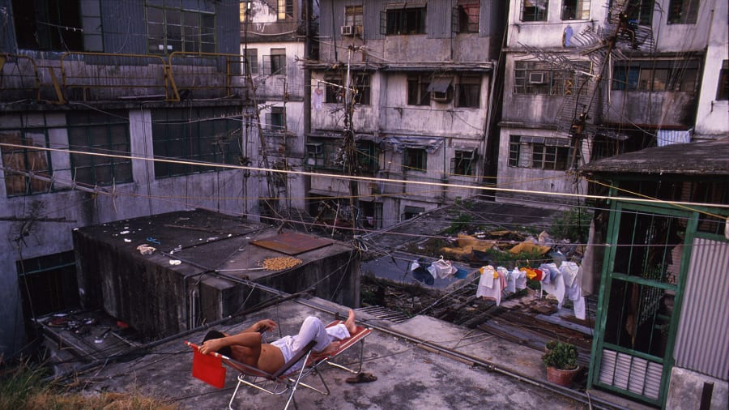

The de facto enclave that became known as Kowloon Walled City dates back to 1847 with the creation of a walled military fort. Following China's defeat in the Sino-Japanese War (1894-1895), parts of China were carved up for control by European countries, most notably the acquisition of Hong Kong to Great Britain. However, the 7 acres that made up the old military fort were left out, and became occupied by squatters.

Over time the area acquired more citizens and unregulated development, becoming a point of contention for municipal Hong Kong. In time it became a haven for organized Chinese crime syndicates, known as triads, who used the unregulated space to oversee gambling houses, drug trades, and brothels. By the 1970's it had been built up to over 300 buildings standing 13-14 stories (the airport was able to regulate their height somehow), and housing over 50,000 people. The entire city was raised in the early 1990's and replaced with a public park that pays tribute to the historic community that resided there.

While the cities demise is unconsequentially the result of it's unsanitary and unregulated conditions, it should by no means be attributed as a 'slum'. While the way of life for the tens of thousands of people that occupied this city may not be desireable to more affluent social classes, many of the residents have fond memories of their time in this community. The triad's ended up being pushed out just in time to watch the city become dismantled. What many may see as a blight was actually a living, breathing colony of trades, enterprises, and human lives.
Watch this short video to better view the conditions and humanity that lived there.